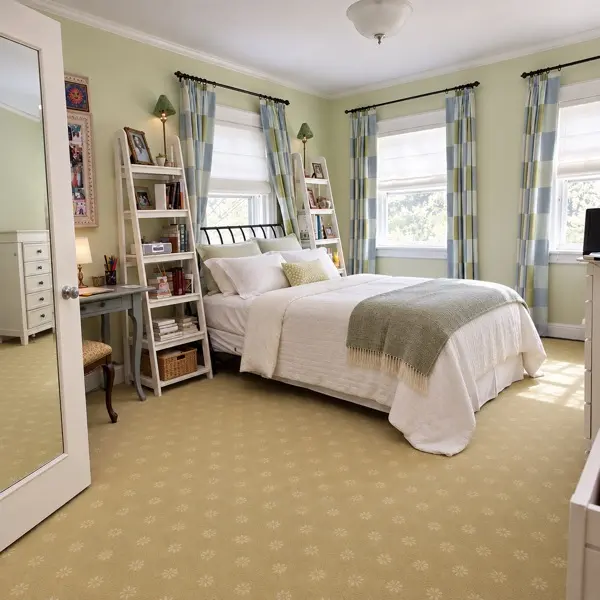
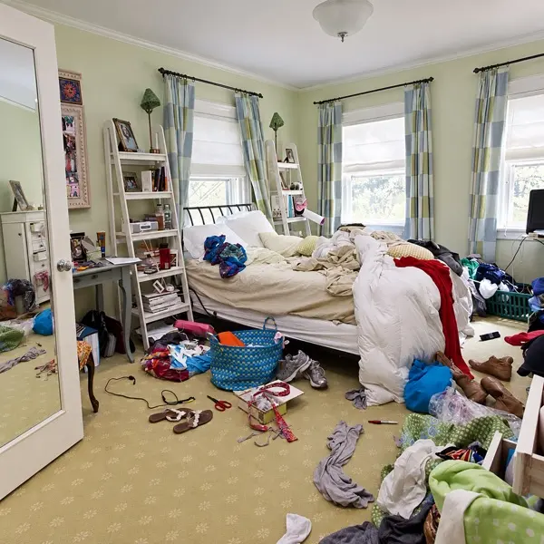
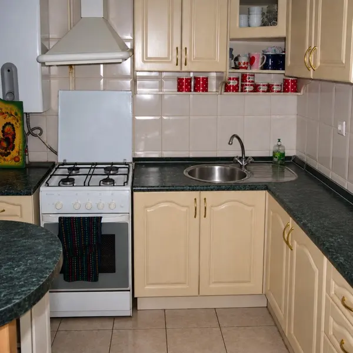
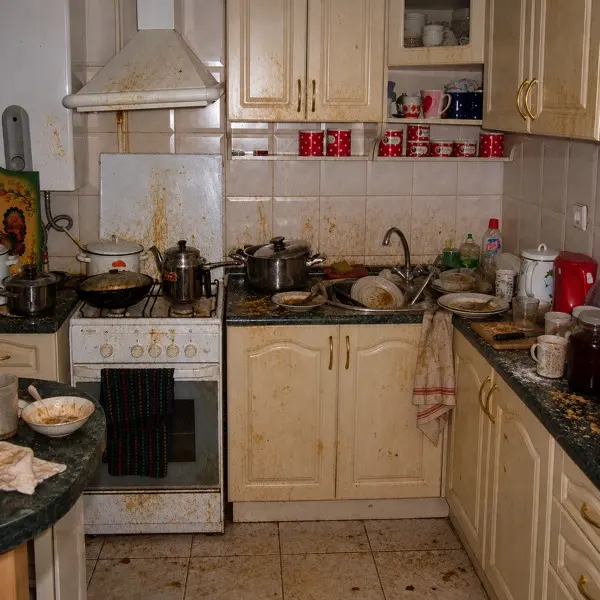
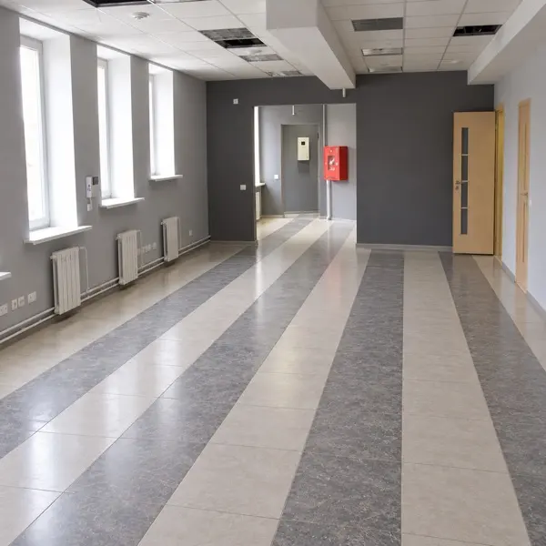
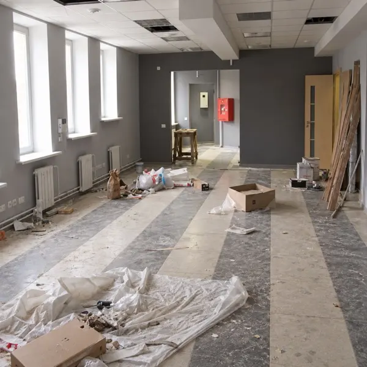

Забота о доме
Уборка комнат, кухни и ванной по согласованному списку работ
Уборка квартир в Санкт-Петербурге
Уборка комнат, кухни и ванной по согласованному списку работ
Все клинеры проходят тестирование и профессиональный инструктаж
Исправим недочёты, если не понравится результат
Стоимость зависит от площади и выбранных услуг. Согласуем цену до начала работ
Выберите площадь и услуги
Позвоните, чтобы обсудить заказ
Проверьте результат по списку


Регулярная уборка, которая помогает сохранять порядок: протираем доступные поверхности, пылесосим и моем полы, приводим в порядок кухню и ванную.


Тщательная уборка всей квартиры: удаляем накопившуюся пыль и загрязнения, уделяем внимание труднодоступным зонам, кухне и санузлам.


Убираем строительную пыль и следы работ, очищаем поверхности и подготавливаем квартиру к комфортному заселению.
Заказывала генеральную уборку квартиры. Девочки просто молодцы! Всё чистенько, даже в труднодоступных местах, куда у самой руки никогда не доходили. Спасибо!
Наконец-то отмыли кухню после нескольких месяцев готовки. Особенно порадовало, как очистили плиту и вытяжку. Сама бы точно столько времени потратила. Спасибо большое!
Обращалась после ремонта. Пыли было просто ужас сколько, думала, никогда от неё не избавимся. Ребята всё убрали, окна отмыли, квартира теперь как новая. Очень довольна!
Первый раз воспользовалась клинингом и осталась приятно удивлена. Приехали вовремя, всё аккуратно убрали, ничего лишнего не трогали. Теперь буду обращаться ещё.
Спасибо за чистоту! Заказывала уборку кухни и ванной, результат очень понравился. Особенно сантехника, всё блестит, даже старый налёт убрали. Однозначно рекомендую!
Уборка комнат, кухни и ванной по согласованному списку работ. Дополнительные услуги можно выбрать в калькуляторе.
Присутствие во время уборки и порядок доступа в квартиру согласуем при обсуждении заказа.
Продолжительность зависит от площади, вида уборки и выбранных услуг. Время согласуем до начала работ.
Площадь умножается на тариф выбранного вида уборки. Если результат ниже минимального заказа, применяется минимум. Затем добавляется стоимость выбранных услуг. Платный выезд согласуется отдельно.